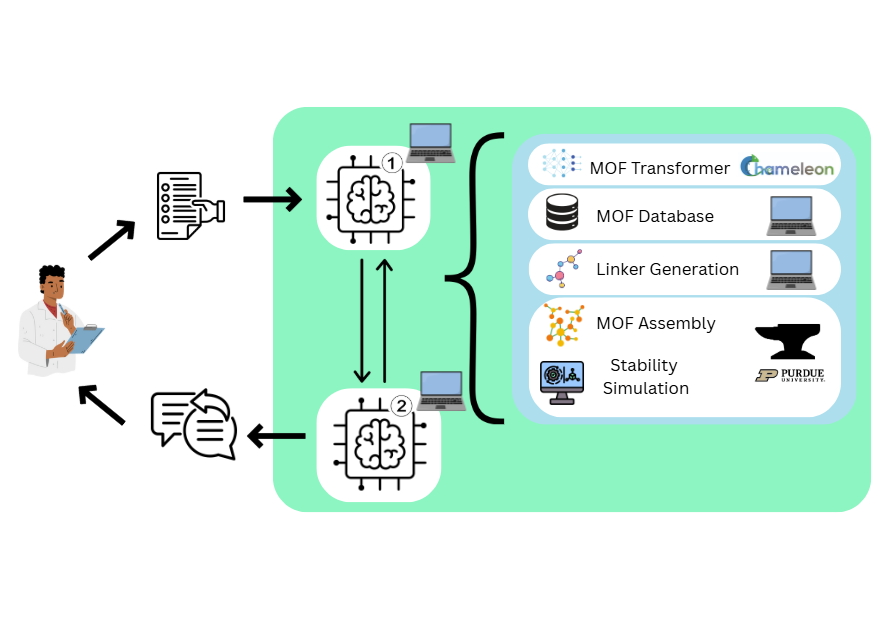
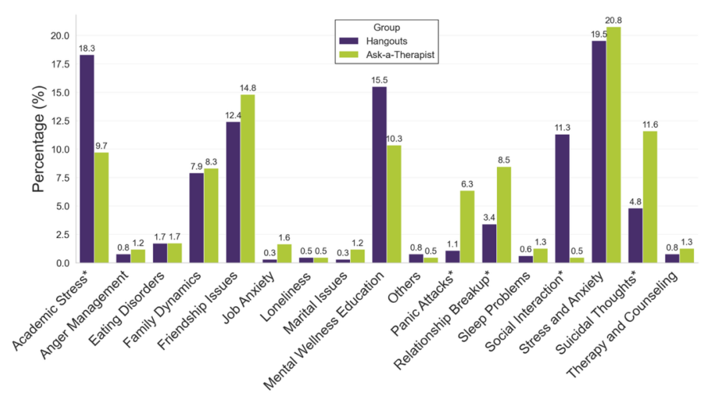

|
Genomic Analysis of Pseudonomas alloputida
UC Berkeley, Compbio C131 Introduction to Computational Molecular and Cell Biology May 2025 - August 2025 Final Report:Genome Analysis of Pseudomonas alloputida |
The goal of this project was to fully characterize a Pseudomonas alloputida isolate by assembling its genome, annotating its functional content, reconstructing its metabolic pathways, and placing it within an evolutionary context. This required several stages: raw read quality control, filtering and trimming, long-read genome assembly, assembly quality assessmenst, genome annotation, metabolic modeling, and comparative phylogenetics. My contributions focused on the early computational pipeline—processing and refining the Nanopore and Illumina sequencing data using FASTQC, Filtlong, Cutadapt, and Trimmomatic, assembling the genome with Flye, and evaluating assembly accuracy and completeness with QUAST and CheckM. These steps produced a high-quality, single-contig assembly that enabled the rest of the team to perform downstream analyses. As a whole, the project revealed that the complete and uncontaminated P. putida–group genome isolate has extensive metabolic versatility and a broad suite of xenobiotic degradation pathways, consistent with an adaptable environmental bacterium found in soil and wastewater systems. |

|
|
Coupling AI Co-scientists with high-performance computing (HPC) for the discovery of metal-organic frameworks (MOFs) for carbon capture
Big Data REU: University of Chicago May 2025 - August 2025 Poster |
I worked with professor Kyle Chard at the University of Chicago on coupling large language model (LLM) agents with MOF discovery tools run on HPC resources. Agents include an LLM for generating SMILES of organic linker molecules, assembler for combining linkers and inorganic metal nodes, molecular dynamics simulation (LAMMPS) for estimating structural stability, and deep-learning model for predicting MOF properties (MOF Transformer). We demonstrated success in the ability of the LLM agents to leverage HPC resources - including multiple compute nodes from the Purdue Anvil supercomputer - to accerate MOF discovery. Findings were presented through a poster at ACM Supercomputing 2025. |  |
|
Topic Modeling of Mental Health Forum Posts for Thematic Analysis
National University of Singapore (NUS), Institute of Mathematical Sciences (IMS), Ministry of Health Office of Healthcare Transformation (MOHT) May 2024 - July 2024 Publication: Digital Mental Health Discourse Among Singaporean Youth: A Topic Modeling Analysis and Comparison to International Platforms |
I worked with Singapore's Ministry of Health, Office of Healthcare Transformation (MOHT) to research posts in MOHT's mental health forum, specifically to discover themes and topics discussed by users. Topic modeling algorithms researched include Latent Dirichlet Allocation (LDA), Nonnegative Matrix Factorization (NMF), Top2Vec, and BERTopic. A novel clustering method was proposed to account for the stochastic nature of BERTopic, the best performing algorithm on our dataset. A comparative analysis between mental health posts on MOHT's forum, Reddit, and HardwareZone (Singaporean forum) was performed to discover insights into similarities and differences based on type of forum and demographics. The project was presented at the 2025 Joint Mathematics Meetings. |  |
|
Wildfire Burned Area Segmentation with Satellite Imagery (Research)
UC Davis, Professor Ali Moghimi June 2023 - August 2023
|
I worked on implementing specialized convolutional U-Nets for segmenting burned areas in multispectral Sentinel-2 Level 2A satellite images of California 2020 wildfires. The end goal is to combine methods for active fire detection, burned area segmentation, and smoke detection to devise a single deep learning model for simulateous prediction of in all three aspects. Current progress includes a well-performing baseline U-Net for burned area segmentation using red, green, and blue band images after data augmentation. |

|
|
Columbia River Chinook Salmon Growth Research with Random Forest Models
UC Davis, Baskett Lab January - July 2021 |
I worked with a PhD student working within the Baskett Lab on machine learning and statistical algorithms for predicting growth of salmon across populations and time in the Columbia River. I used both generalized additive models (GAMs) and Random Forest models to make predictions using Python tools. Random Forest was also used to assess variable importance, where the variables included climate and oceanographic predictors that influence the growth of salmon. |

|